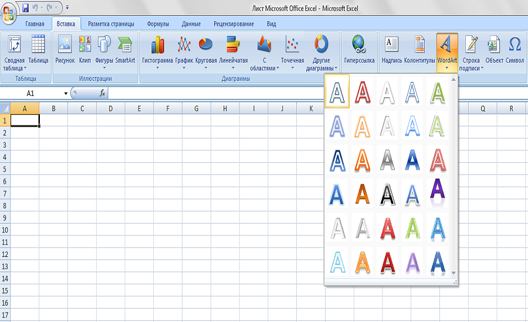
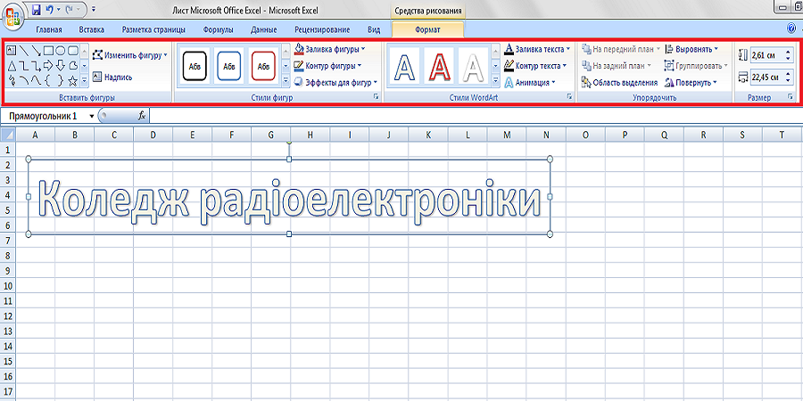
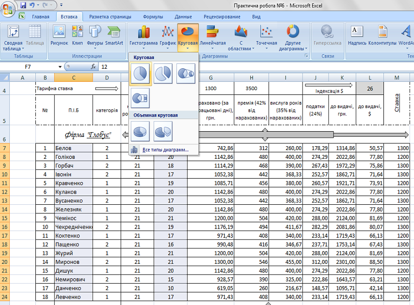
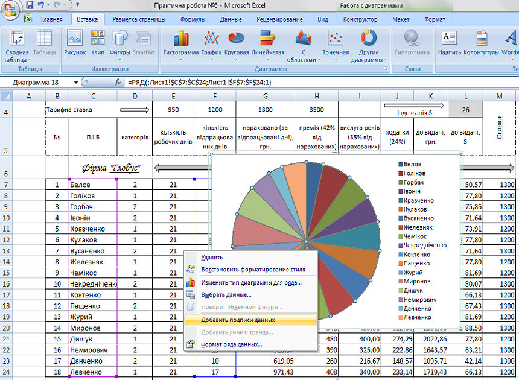
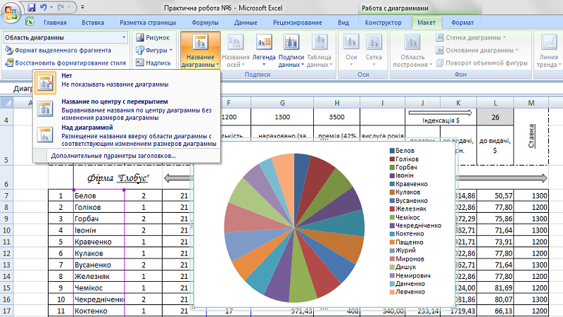
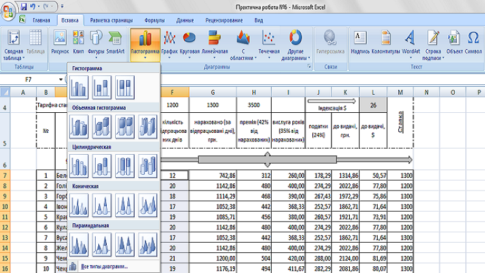
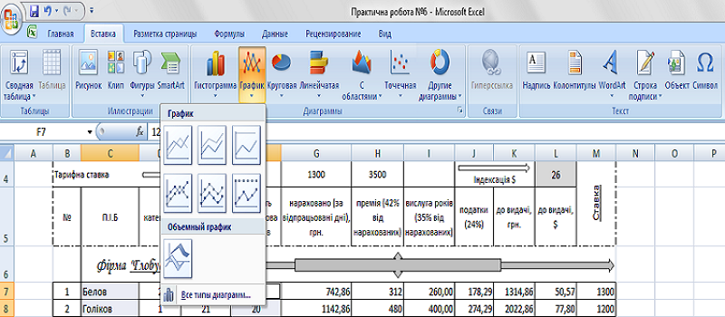

Теоретичний матеріал по виконанню практичних робіт
Додавання написів за допомогою Word ArtДля цього необхідно перейти на вкладку «Вставка», далі обрати та натиснути «WordArt»
Далі з явиться прямокутник у якому можна робити та змінювати різноманітні написи, користуючись додатками «Средства рисования»
 Створення діаграмДля створення діаграми необхідно виділити дані, які будуть в ній відображатися, перейти на вкладку «Вставка», «Диаграммы», «Круговая». 
Далі з явиться діаграми яку можна редагувати, тобто додавати їй назву, підпис даних і т.п
Щоб додати назву діаграмі необхідно перейти в «Макет», «Название диаграммы»
Відкривши «Вставка», «Диаграмы», «Другие диаграммы» можна створити ряд інших діаграм (наприклад діаграма типу "Пузырьковая"). Також, у вкладці «Диаграмы» можливо відобразити гістограми та графіки різних типів:
 